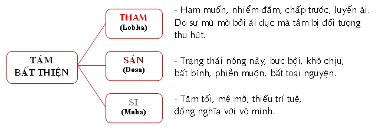
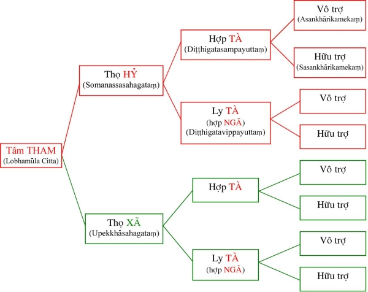
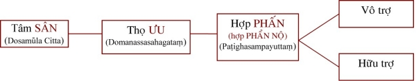
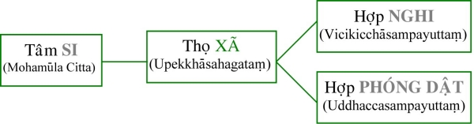

|
PHẬT GIÁO NGUYÊN THỦY THERAVÀDA VI DIỆU PHÁP BAN HOẰNG PHÁP |
|
BuddhaSasana Home Page |
Vietnamese, with Unicode VU Times or CN-Times font |
|
|
PHẬT GIÁO NGUYÊN THỦY THERAVÀDA VI DIỆU PHÁP BAN HOẰNG PHÁP |
|
Xin lưu ý: Cần có phông UnicodeViệt-Phạn VU Times hay CN-Times cài vào máy để đọc các chữ Pàli. |
|
BÀI 5. TÂM
BẤT THIỆN 1. Ðịnh nghĩa: Tâm bất thiện là tâm ác, xấu, không tốt đẹp. Nói theo chi pháp, tâm bất thiện là những tâm sanh lên có sở hữu bất thiện đồng sanh và hòa hợp (theo lời giải của bộ Aṭṭhakathā). Phạn ngữ Akusalā dịch là bất thiện, phi thiện, có nghĩa là trái với thiện. Nếu thiện là những gì lành mạnh của tinh thần thì bất thiện là trạng thái suy nhược, bệnh hoạn của tâm (Rogayattha); nếu thiện là cái gì tốt đẹp thì bất thiện là cái gì không tốt đẹp; nếu thiện là cái gì khôn khéo thì bất thiện là cái gì vụng về; nếu thiện là cái gì hiền thiện thì bất thiện là cái gì tội lỗi; nếu thiện là cái gì tạo quả an lạc thì bất thiện là nguyên nhân sanh khổ đau. 2. Phân loại:  1.1) Tâm Tham (Lobhamūla citta): Tâm là biết cảnh, Tham là ham muốn. Tâm tham là trạng thái tâm biết cảnh với tư cách ham muốn, bị thu hút bởi đối tượng khả ái. Bộ Atthakathā giải rằng: Cittaṃ lubhatiti lobha cittaṃ = Tâm ái nhiểm gọi là tâm tham. Như vậy ta có thể nói tâm tham là sự bị cảnh thu hút, dính mắc đối tượng, và đối tượng của tâm tham là cảnh khả ái, cũng như đặc tánh của nam châm là hút sắt, thép, ... và những gì bị nam châm hút thì là chất kim loại. Tâm tham được chia làm 8 thứ, căn cứ vào 3 phương diện: - Thọ: Thọ hỷ hay thọ xã Thọ hỷ (Somanassavedanā): là cảm giác vui mừng, hoan hỷ của tâm. Thọ xã (Upekkhavedanā): là cảm giác thản nhiên, tự nhiên, vô tư của tâm. Hợp tà (Micchādiṭṭhigatasampayuttaṃ): là lòng ham muốn có sự hiểu sai, chấp lầm sự vật (tà kiến là không thấy rõ sự thật, không thấy lý vô thường, khổ não, vô ngã). Ly tà (Amicchādiṭṭhigatasaṃpayuttaṃ): không có sở hữu tà kiến đồng sanh, hòa hợp. Hữu trợ (Sasankhārikamekaṃ): là tâm sanh lên do sự trợ giúp nhiều lần, cần có động cơ thúc đẩy. Sự trợ giúp ở đây có thể là của chính mình (phân vân, suy nghĩ, đắn đo, ...) hay của người khác (dụ dổ, khuyến khích, kêu gọi, ...). Vô trợ (Asankhārikamekaṃ): là tâm sanh lên mau lẹ không cần có sự trợ giúp. Tám tâm Tham được cấu tạo như sau: 1) Tâm Tham Thọ Hỷ Hợp Tà Vô Trợ: là lòng tham với một cảm giác vui mừng, thích thú, có sự chấp sai và khởi lên một cách mau lẹ không do dự. 2) Tâm Tham Thọ Hỷ Hợp Tà Hữu Trợ: là lòng tham với một cảm giác vui mừng, có sự chấp sai, phát sanh chậm chạp (do suy nghĩ nhiều lần hay người khác phải xúi biểu nhiều lần). 3) Tâm Tham Thọ Hỷ Ly Tà Vô Trợ: là sự ham muốn với cảm giác thích thú, không hiểu sai, sanh khởi mau lẹ. 4) Tâm Tham Thọ Hỷ Ly Tà Hữu Trợ: là sự ham muốn với cảm giác vui mừng, không có sự hiểu sai, sanh khởi một cách chậm chạp. 5) Tâm Tham Thọ Xã Hợp Tà Vô Trợ: là sự tham muốn một cách thản nhiên, với sự nhận thức sai lầm, sanh khởi một cách mau lẹ. 6) Tâm Tham Thọ Xã Hợp Tà Hữu Trợ: là sự tham muốn một cách bình thản, với sự nhận thức sai lầm, sanh khởi chậm chạp. 7) Tâm Tham Thọ Xã Ly Tà Vô Trợ: là sự tham muốn bình thường, không có sự chấp lầm, khởi lên mau lẹ. 8) Tâm Tham Thọ Xã Ly Tà Hữu Trợ: là lòng tham muốn bình thản, không có sự hiểu sai, sanh khởi do sự thúc đẩy nhiều lần.  Nhân sinh Tâm Tham là Tục sinh có nghiệp Tham liên hệ, nối đời trước đã tham, gặp hoàn cảnh tốt và hay gặp cảnh vừa ý. Tâm Tham thường được phát khởi do nhiều nguyên nhân, nhưng nguyên nhân chính là sự tham ái (ái dục). 1.2) Tâm sân (Dosamūla Citta): Sân là sự khó chịu, trái ý, nghịch lòng, bất toại nguyện. Tâm sân là sự biết cảnh với tư cách nóng nảy, bất bình, không vừa ý. Ðặc tính của tâm sân là hủy diệt đối tượng, không chấp nhận đối tượng (trái với tâm tham là gìn giữ, ôm ấp đối tượng). Cảnh của tâm sân là những đối tượng khả ố, cũng như lửa có đặc tánh thiêu đốt. (1) Tâm Sân Thọ Ưu Hợp Phấn Hữu Trợ: là sự nóng giận, ưu phiền, sanh lên do sự thúc đẩy nhiều lần. Thí dụ: một người tánh hay vui vẽ, gặp một người dùng lời chửi mắng, lúc đầu tâm chưa phản ứng gì, sau khi nghe nhiều lần thì nổi giận. Sự nổi giận ấy là tâm hữu trợ vậy. (2) Tâm Sân thọ Ưu Hợp Phấn Vô Trợ: là sự khó chịu, trái ý, nghịch lòng phát sinh lên mau lẹ không cần một động năng nào thúc đẩy cả. Thí dụ: một người quen tật sân, ai chạm một chút cũng nổi giận, do đó, khi vừa gặp cảnh bất như ý là tâm sân liền nổi lên. Tâm sân đó là tâm sân vô trợ vậy.  Tâm sân thường sanh khởi do nhiều nguyên nhân, như do tánh quen sân, là có thói quen gặp gì trái ý cũng phát sanh sân hận, hay đối với bản tánh nông nỗi, thiếu sự suy xét sâu xa cũng là yếu tố làm tâm sân phát khởi; hoặc đối với người thiếu sự học hỏi, tánh tình thô lỗ cũng là một nguyên nhân làm tâm sân dể phát khởi; và nguyên nhân chính phải nói là sự gặp cảnh không tốt, khả ố. 1.3) Tâm Si ( Mohamūla Citta): Si là sự si mê, mờ ám. Tâm si là trạng thái tâm mê tối, thiếu sự sáng suốt. Hành động mù quáng, sai lầm vì không thấu triệt các sự vật.(1) Tâm Si Hợp Hoài Nghi (Vicikicchāsampayuttaṃ): là sự mờ ám, si mê của tâm do sự lưởng lự, phân vân. Sự hoài nghi ở đây phải hiểu là sự hoài nghi có hậu quả tai hại như hoài nghi Tam Bảo, hoài nghi Tam Học, hoài nghi Tam thế, hoài nghi duyên sinh, ... Hoài nghi Phật: là không tin sự giác ngộ, hay không tin tuệ giác hoặc oai lực của Ðức Phật. Hoài nghi Pháp: là nghi ngờ về công năng của pháp bảo, hoài nghi về tánh cách chắc thật và hiệu quả của Phật pháp. Hoài nghi Tăng: là sự nghi ngờ về sự thành tựu giới hạnh, thành tựu đạo quả của chư tăng. Hoài nghi Tam học: là sự nghi ngờ về pháp tu tam học như hoài nghi về sự trong sạch của giới, hoài nghi sự thanh tịnh tiến hóa của định, hoài nghi sự sáng suốt, tỏ ngộ của tuệ. Hoài nghi Tam thế: là phân vân về tự ngã (Atta) trong quá khứ, hiện tại và vị lai. Hoài nghi về Duyên Sinh: là sự nghi ngờ về hiện tượng sanh tử, phân vân về đời sống hiện hữu của chúng sanh. Nên nhớ ngoài những hoài nghi kể trên còn có những hoài nghi thông thường, như do dự trước khi hành động, muốn đi đâu nhưng còn do dự vì sợ có khách đến thăm bất tử ... những hoài nghi đó không thuộc vào tâm Si hoài nghi. (2) Tâm Si Hợp Phóng Dật (Uddhacca Mohacittaṃ): là sự mù quáng, thiếu sáng suốt do sự lao chao, bấn loạn của tâm. Phóng = ném, dật = tung tóe; Phóng dật là sự ném một vật vào đống tro làm bay lên mù mịt, giống như một người đang ngồi làm việc, bổng có một tiếng động lớn làm người đó giựt mình hay như một người sợ ma, lúc đi đêm, bất chợt gặp bóng đen, người đó sợ hải la lên, tâm bị loạn động.  Tâm Si được sinh khởi do nghiệp si mê đời trước, sanh nhằm đời nhiều sân hận, thường gặp cảnh phiền não, thiếu sự thu thúc nơi ngũ căn. Tâm Si thường sinh khởi do những nguyên nhân như: do thói quen hay có tánh sợ sệt, hay có tánh giựt mình (sở hữu Phóng dật), hay có tánh ngờ vực (sở hữu Hoài nghi). Ngoài ra những người sanh ở những xứ nhiều sân hận như chiến tranh nên tâm thường hay giao động, hoặc thường hay gặp những nghịch cảnh gây phiền não, không tịch tỉnh. Cần ghi nhận ở đây là khi Tín căn yếu sẽ phát sanh Hoài Nghi. Tấn căn, Niệm căn và Ðịnh căn yếu làm phát sanh Phóng Dật. Tuệ căn yếu cũng phát sanh Hoài Nghi ... 3. Hành sự: Tâm bất thiện khi sanh khởi bình thường gọi là bất thiện (Akusalā), khi sanh khởi mạnh gọi là ác (Pāpa). Ác hay việc làm của tâm bất thiện gồm có 10, nương theo ba nơi tạo nghiệp là Thân, Khẩu và Ý nghiệp.
Sở dỉ ở đây không nói đến tâm Si vì hành sự của tâm này đã rõ ràng qua tên gọi của mỗi thứ tâm như ngờ vực là hành sự của tâm Hoài Nghi; bấn loạn là hành sự của tâm Phóng Dật. Còn đối với thập ác, tâm Si quá yếu ớt nên không thể can dự vào. 4. Tác năng tạo quả Trong 12 tâm bất thiện, khi tạo các ác nghiệp thì sẽ cho quả nặng nhẹ như sau Tâm Thọ Hỷ có quả nặng hơn tâm Thọ Xã. Vì nghiệp (Kamma) hay hành động tạo quả, phần chủ yếu là sự chủ tâm, cố ý (hay sở hữu Tư – Cetanā – Phật ngôn: "Cetanānaṃ Bhikkhavekammaṃ vadāmi = Nầy các Tỳ Khưu, Nghiệp là Sở hữu Tư"). Do đó, nếu sự cố ý mạnh sẽ cho quả nặng và ngược lại. Những tâm làm ác với sự thỏa thích (Thọ Hỷ), đương nhiên sẽ có sự cố ý mạnh hơn những tâm hành sự với cảm thọ bình thường (Thọ Xã); hay những tâm mang kiến chấp sai lầm (Hợp Tà), có sự chủ tâm mảnh liệt hơn những tâm không cố chấp (Ly Tà); những tâm phát khởi mau lẹ (Vô Trợ) sẽ có chủ ý, có tâm mạnh hơn những tâm sanh khởi nhờ sự trợ giúp nhiều lần (Hữu Trợ) vì cần có động cơ thúc đẩy, tâm hữu trợ thường sinh lên với tính cách gượng gạo nên sự chủ tâm trong tâm này rất yếu. 5. Nhân sanh tâm bất thiện 5.1) Tâm không khéo tác ý (Ayoniso mānasikāra): là sự không khéo dùng tâm hay vụng về trong cách suy nghĩ, thí dụ: trước sự bất hạnh, đau khổ xảy đến, một người khéo tác ý sẽ nghĩ rằng "Ðây là một cơ hội để ta hành pháp nhẫn nại", rồi người ấy hoan hỷ đón nhận nghịch cảnh đó. Trái lại, người không khéo tác ý sẽ than thở, phát tâm sầu muộn (tâm Sân dấy lên). Do đó, có thể nói không khéo tác ý là một nguyên nhân sanh tâm bất thiện.5.2) Ở xứ không nên ở (Appatirāpadanevada): là trú ngụ ở những nơi phát sanh nhiều phiền não, gây tai hại cho tinh thần, khiến tâm hằng giao động, như những nơi thường có chiến tranh, những nơi gần chốn ăn chơi, ... đều là những nơi không nên ở vì tục ngữ có câu "Ở bầu thì tròn, ở ống thì dài", ngoài lý do bản tánh và thói quen ở kiếp trước, con người còn dể bị ảnh hưởng bởi môi trường chung quanh mình. Vì vậy, có thể nói, cư ngụ ở những nơi không nên ở cũng là một nguyên nhân sanh tâm bất thiện. 5.3) Thân cận phi thiện nhơn (Asappurisapanissaya): Phi thiện nhơn là những người có thân ác, khẩu ác và ý ác; những người thiếu giới đức, kém trí tuệ. Khi giao thiệp với những người ấy, ta dể bị ảnh hưởng theo ("gần mực thì đen!"), do đó việc thân cận phi thiện nhơn cũng là một nguyên nhân sanh tâm bất thiện. 5.4) Ðời trước không có thói quen tạo phước (Pubbe akata puññata): Có thể nói phiền não của chúng sanh giống như cỏ, thiện pháp của chúng sanh giống như lúa; lúa khó trồng mà dể chết, còn cỏ không trồng nhưng khó diệt. Nói một cách khác, tâm bất thiện là mộât bản năng thường có của chúng sanh ("nhân chi sơ, tính bổn ác!"). Vì vậy, một người không có thói quen tạo phước thì rất dể sinh ác tâm. 5.5) Hướng mình theo tà vạy (Attamicchapanidhi): tức là có khuynh hướng làm điều ác, nuôi hoài bảo bất chánh, có lập trường bất hảo. Như một người muốn làm du côn; muốn trở thành tướng cướp ... Do thực hành theo những ý hướng bất chánh đó, người ấy tạo ra những hành động bất thiện. -ooOoo-
Ðầu trang |
Mục lục
| 01
| 02
| 03
| 04
| 05
| 06
| 07
| 08
| 09 |
Chân thành cám ơn Bác sĩ Nguyễn Tối Thiện đã gửi tặng bản vi tính (Bình Anson, 10-2002).
[Trở
về trang Thư Mục]
updated: 24-08-2003